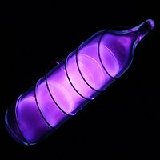

Numero atomico: 18
Massa atomica: 39,95
Temperatura di fusione (°C): -189
Temperatura di ebolizione (°C): -186
Energia di prima ionizzazione (kj/mol): 1521
Elettronegatività (secondo Pauling): --
Densità: 1,78
Numeri di ossidazione: --
Configurazione elettronica: 1s2, 2s2, 2p6, 3s2, 3p6
Maggiori Informazioni